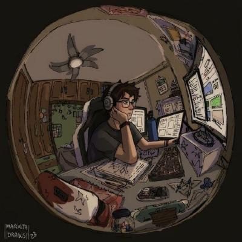

Past papers, minus the hunting
Pick a semester and get every Summer & Winter paper GTU has published for Diploma Computer Engineering — or type a subject like Data Structures and land on its last five years of exams, old subject codes included.
No sign-up, no ads in the PDF — every link opens the file straight off gtu.ac.in.
Which semester are you stuck in?
Click a card and we pull that semester's papers from GTU's own archive. Syllabus shown is the one running right now.
Four taps to the PDF
- 1
Choose your semester from the cards above.
- 2
Give it a second — papers stream in from GTU's archive, not a copy we keep.
- 3
Use the 3 / 4 / 5 tag for how many past exam years you want. It remembers your choice.
- 4
Tap any Summer or Winter chip. The official PDF opens on gtu.ac.in in a new tab.
Nothing here is faked, scraped or re-typed.
Every button opens GTU's own Question Paper Archive on gtu.ac.in — the same files the university uploads after each exam. If a PDF is missing, it's missing at GTU too.
Subject lists follow the currently running diploma syllabus (2025-26, 2026-27 and latest published). Brand-new subject codes show papers only after GTU conducts the first exam under that code; older codes stay linked where a subject was simply renamed.

Saurabh Sharma
Full Stack MERN Developer · GTU — Gujarat Technological University
I built this hub for GTU Diploma in Computer Engineering students. Every button here links straight to GTU's own question paper archive — nothing is re-hosted, edited or faked. Papers go up only after the university uploads them.
Missing paper, wrong subject code or an old code that should be linked? Mail me and I'll fix it.